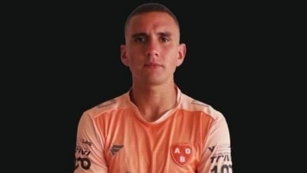
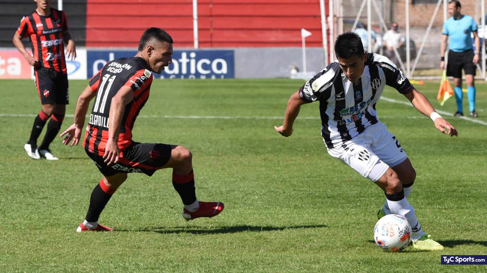
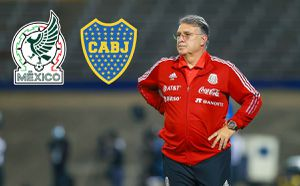

Asesinaron a un futbolista de Berazategui en un intento de asalto
Un futbolista del Club Berazategui que ademas trabaja como chofer de Uber fue asesinado de un balazo en la cabeza por delincuentes que habrian intentado robarle el auto en la localidad bonaerense de Villa San Petersburgo
Patronato vencio a Central Cordoba en un duelo clave por la permanencia
El patron le gano 3-1 al Ferroviario por la fecha 8 de la liga profesional y sueña con mantenerse en primera
Riquelme quiere al tata Martino como dt de Boca
Confirman que luego del mundial de Qatar, el entrenador de la seleccion de Mexico no seguira al mando de la tri y podria recalar en Boca, donde ya habria dado el visto bueno para regresar a Argentina
